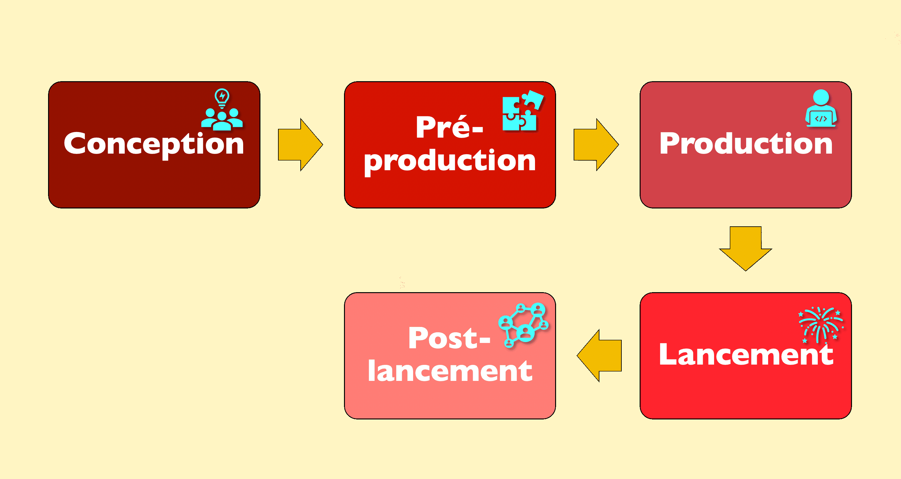
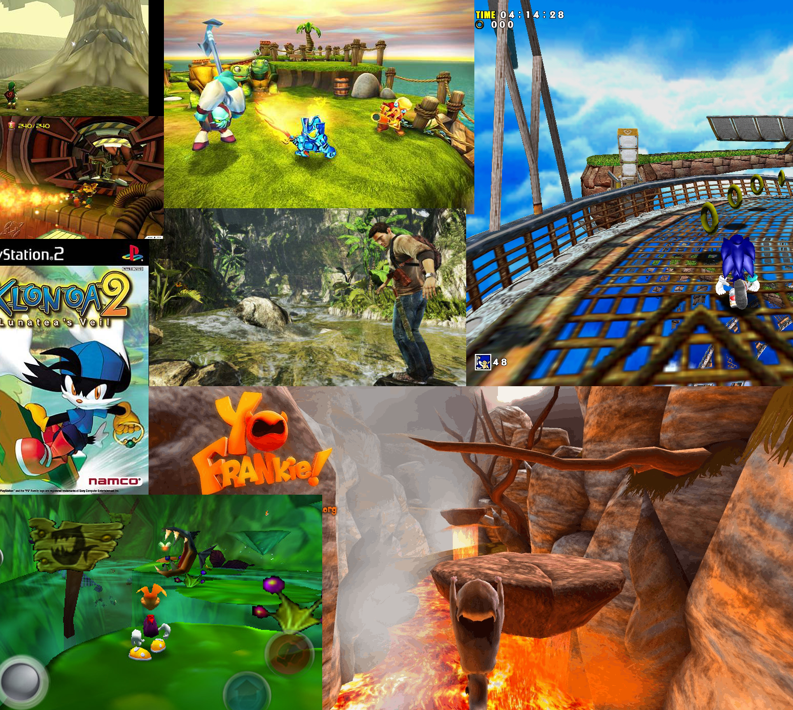

La cuisine du studio, des premières idées aux nuits blanches de debug
Petit rappel
Avant d’avoir un Mario qui saute ou un Creeper qui explose dans ton écran, il y a tout un process (parfois épique) derrière.
Non, un jeu ne sort pas d’un micro-ondes “réchauffe-moi un AAA”. Découvre ici toutes les grandes étapes, les métiers, les outils, et les secrets de la création d’un jeu vidéo moderne.
Le schéma ci-dessous illustre les grandes étapes de la création d’un jeu vidéo, de l’idée à la sortie.

Un jeu vidéo, c’est comme un iceberg : 10% visible, 90% de boulot en coulisses.
— Capucine Bertin, une professionnelle de l'animation
1. L’idée – Le déclic créatif
Tout commence par une idée. Mais une vraie ! Pas juste “et si on faisait un jeu où tu tapes des bananes” (quoique...)
Un gameplay original ?
Un univers visuel stylé ?
Une histoire qui accroche ?
Une mécanique jamais vue ?
Ci-dessous , tu peux découvrir le brainstorming réalisé avec mon équipe pour le Trophée NSI 2025. Ce schéma retrace toutes nos idées, contraintes et réflexions lors du choix du projet Kage no Michi : utilitaire ou jeu, inspirations, aspects techniques, et critères de sélection. C’est à partir de ce travail collaboratif que notre aventure de création de jeu vidéo a vraiment commencé.
Les brainstormings sont souvent à l’origine des concepts les plus fous… et parfois des plus grands succès.
Exemple : Undertale → "Et si on pouvait finir un RPG sans tuer personne ?"
À ce stade, on prépare un Game Concept Document (GCD) :
Résumé de l’idée
Plateforme cible (PC, console, mobile...)
Ambiance et inspirations (films, jeux, livres...)
Pitch rapide (pour investisseurs, éditeurs, ou juste convaincre les potes)
Public visé (âge, style de joueur)
Analyse de la concurrence
Premiers croquis ou moodboards

Ce moodboard , créé par Maarten, illustre l'inspiration visuelle et conceptuelle pour un jeu en vue à la troisième personne sur PS Vita. Il combine des éléments de design de personnages, d'univers et de gameplay. Un moodboard permet de visualiser l’ambiance générale du jeu dès la phase d’idéation, facilitant ainsi la cohérence artistique et la communication au sein de l'équipe de développement.
Le savais-tu ? Beaucoup de jeux cultes sont nés lors de game jams (concours de création en 48h). Celeste ou Superhot en sont issus !
Timelapse d'une Game Jam : de l'idée à un prototype jouable en 48h
Les game jams sont le terrain d’expérimentation idéal pour tester des concepts innovants sans pression commerciale.
2. Game Design – L’architecture du fun
Le game designer est le chef d’orchestre du gameplay. Il transforme l’idée brute en expérience jouable.
Définit les règles du jeu (objectifs, conditions de victoire/défaite...)
Conçoit les mécaniques (saut, combat, dialogue, craft...)
Équilibre la difficulté, le rythme, la progression
Crée des prototypes (papier, numérique, moteurs comme Unity/Godot)
Imagine les niveaux, les puzzles, les ennemis
Avant de coder, beaucoup de studios testent leurs idées sur papier ou avec des Lego !